Indices of Deprivation 2019
The English Indices of Deprivation were published by the Ministry of Housing, Communities & Local Government in September 2019. The Indices measure relative levels of deprivation in 32,844 Lower-layer Super Output Areas (LSOAs) in England. Each LSOA contains approximately 1,500 residents or 650 households. They are ranked from 1 (most deprived) to 32,844 (least deprived) and assigned to a decile ranging from 1 (most deprived 10%) to 10 (least deprived 10%). Local authorities in England are also ranked from 1 to 317 based on a population weighted average rank or score of the LSOA data.
Relative deprivation is measured using 39 indicators which are grouped across seven different domains: Income; Employment; Education, skills & training; Health & disability; Crime; Barriers to housing & services; Living environment. Each domain is combined and weighted to create the Index of Multiple Deprivation (IMD), an overall measure of relative deprivation.
We have created interactive apps and reports to provide visualisation and analysis of the Indices of Deprivation 2019 data.
LSOA and Local Authority District resources across England
Interactive IoD 2019 app
Interactive visualisations of the Indices of Deprivation 2019 and 2015 data releases for Lower-layer Super Output Areas (LSOA) across England. The LSOAs are visualised geographically and within a chart via the Local Authority Districts they belong to.

LSOA data
Indices of Deprivation 2019 data at Lower-layer Super Output Area (LSOA) level across England. The metadata page contains links to the source data and more information.
Local Authority District data
Indices of Deprivation 2019 data at Local Authority District level across England. The metadata page contains links to the source data and more information.
Local Authority District resources for Trafford
The following Trafford-specific resources are provided at Local Authority District level, including context with Greater Manchester (GM) and Chartered Institute of Public Finance and Accountancy (CIPFA) nearest neighbours.
Trafford compared to other GM authorities
Report visualising and analysing the Indices of Deprivation data for 2019 and the changes from 2015 for Trafford in comparison to the other Local Authorities within Greater Manchester.
Trafford compared to CIPFA nearest neighbours
Interactive app visualising the Indices of Deprivation 2019 for Trafford and its Chartered Institute of Public Finance and Accountancy (CIPFA) nearest neighbours.
Index of Multiple Deprivation 2019 for Trafford
Static graphic visualising the overall Index of Multiple Deprivation (IMD) for Lower-layer Super Output Areas (LSOA) in Trafford. The previous version based on the Index of Multiple Deprivation 2015 is also available.
Electoral Ward resources for Trafford
Electoral Ward boundaries and LSOA boundaries do not always perfectly align and so it is impossible to aggregate from LSOA to ward exactly. Instead a ‘best-fit’ methodology is used by the Office for National Statistics (ONS) to assign LSOAs to the most appropriate ward.
Ward Profiler
Our Ward Profiler app presents thematic information as interactive maps and charts. The Indices of Deprivation 2019, along with other deprivation datasets, can be found by choosing "Deprivation" from the selection list.
Electoral ward data
Indices of Deprivation 2019 data at Electoral Ward level for Trafford. The metadata page contains links to the individual domain dataset files and other information.
The following reports present the Indices of Deprivation 2019 data for each of the 21 wards in Trafford, based on the best-fit LSOAs. The wards have been ranked where 1 is the most deprived and 21 is the least deprived on the IMD 2019.
Altrincham
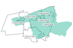 Rank: 16 out of 21.
Ashton upon Mersey
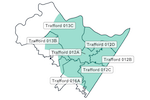 Rank: 14 out of 21 (with Broadheath).
Bowdon
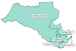 Rank: 19 out of 21.
Broadheath
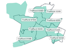 Rank: 14 out of 21 (with Ashton upon Mersey).
Brooklands
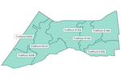 Rank: 18 out of 21.
Bucklow-St Martins
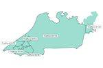 Rank: 1 out of 21.
Clifford
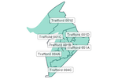 Rank: 2 out of 21.
Davyhulme East
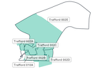 Rank: 11 out of 21.
Davyhulme West
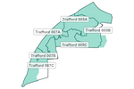 Rank: 10 out of 21.
Flixton
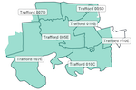 Rank: 13 out of 21.
Gorse Hill
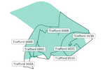 Rank: 4 out of 21.
Hale Barns
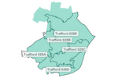 Rank: 20 out of 21.
Hale Central
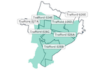 Rank: 17 out of 21.
Longford
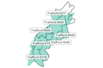 Rank: 5 out of 21.
Priory
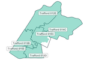 Rank: 12 out of 21.
Sale Moor
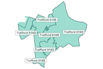 Rank: 8 out of 21.
St Mary's
 Rank: 6 out of 21.
Rank: 6 out of 21.
Stretford
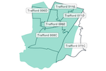 Rank: 3 out of 21.
Timperley
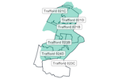 Rank: 21 out of 21.
Urmston
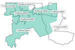 Rank: 7 out of 21.
Village
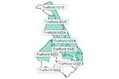 Rank: 9 out of 21.